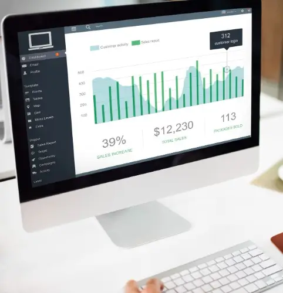

01
Atención al cliente
Llamadas, correo y chat para atender consultas y acompañar a tus clientes en cada gestión.
Nos integramos a tu empresa para atender a tus clientes, resolver sus consultas y acompañar tus procesos comerciales.
Atención, campañas de contacto, investigación y control de calidad, con equipos y tecnología que se adaptan a tu operación.
Llamadas, correo y chat para atender consultas y acompañar a tus clientes en cada gestión.

Campañas de ventas, cobranzas, seguimiento y confirmaciones para mantener el contacto con tus clientes.
Encuestas telefónicas y medición de satisfacción para conocer a tu público y apoyar tus decisiones.
Evaluación de grabaciones, documentos y vídeos según los criterios y procedimientos de tu empresa.
Seguimiento de internet y redes sociales para conocer la percepción de tu marca y a tu audiencia.
Monitoreo de interacciones, SLA y métricas en tiempo real mediante dashboards, con reportería personalizada para tu operación.
La tecnología facilita el trabajo. Nuestro equipo aporta el criterio y la cercanía para resolver cada caso.
Conversemos sobre tu operación ↗
Telefonía, correo, SMS, webchat, WhatsApp y redes sociales integrados para que el equipo gestione los contactos desde un mismo entorno.
Supervisión de la operación y grabaciones para acompañar al equipo, revisar la calidad y dar seguimiento a las interacciones.
Reportes descargables, programables y personalizables que permiten revisar la actividad y detectar oportunidades de mejora.
Flujos y automatizaciones para facilitar tareas repetitivas, con atención humana cuando la consulta necesita una persona que la resuelva.
Tenemos experiencia en servicios financieros, educación, investigación de mercado y empresas de servicios.
“Con Mets optimizamos la atención de nuestra red a nivel nacional.”Caja Vecina
“El volumen de matrículas dejó de ser un problema gracias a la escalabilidad de Mets.”AIEP
“Integración tecnológica sólida y soporte altamente especializado.”Sonda
En METS combinamos experiencia comercial, tecnología y operación para conectar a las empresas con sus clientes. Nos integramos a tu equipo con servicios de atención, encuestas y seguimiento que ayudan a construir relaciones directas y duraderas.
Trabajamos con cercanía, flexibilidad y compromiso con cada operación.
Cuéntanos qué necesita tu empresa.
Empecemos por escucharte.